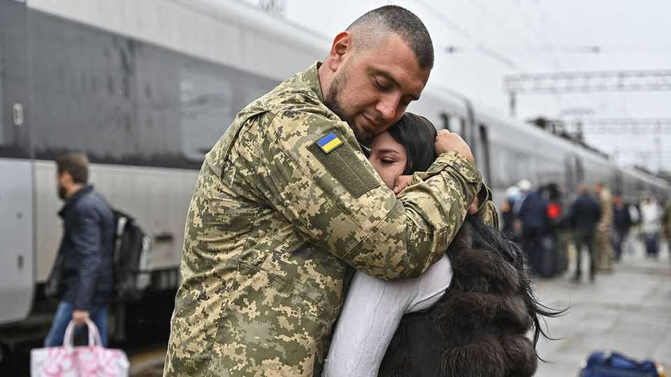
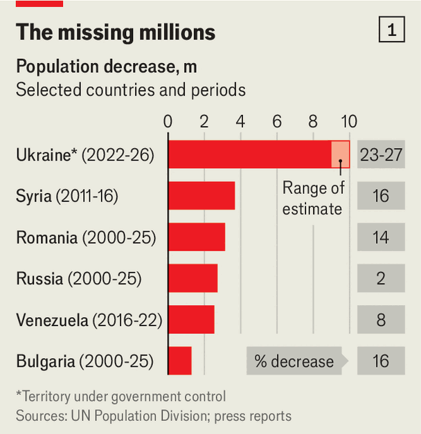
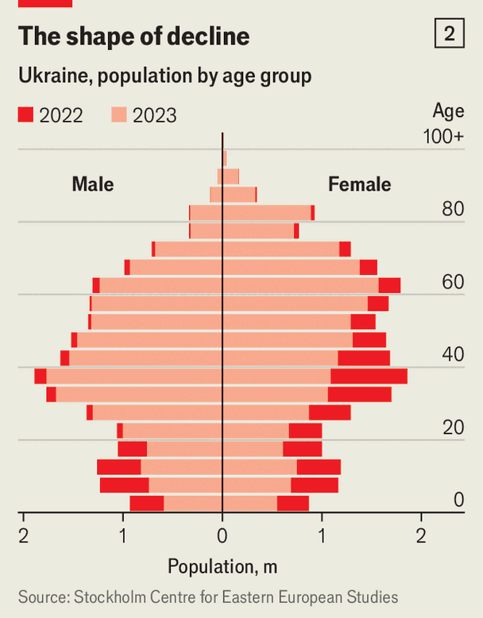

War-battered Ukraine risks a demographic collapse
Birth rates are plunging and Russia is celebrating

Nov 5th 2026
Alyona’s waters broke in her hometown of Kramatorsk, 10km from the front line. The city has no functioning maternity ward, so an ambulance took her to Sloviansk, a short drive under a canopy of anti-drone netting. Complications then forced her to make an hours-long trip to Kharkiv, where on October 8th she gave birth to a son. That hospital had its dangers too: during air raids mothers and newborns are rushed to a bunker. But it was safer than Kramatorsk, where on the same day a Russian bomb killed 30 people.

Alyona is one of the few. Births in Ukraine are falling, in part because there are fewer adults. Since Russia’s full-scale invasion in 2022 the population inside government-controlled territory has fallen from about 37m to 27m-28m (see chart 1). Around 3m-5m Ukrainians now live under Russian occupation, and millions more have emigrated. Ukraine’s president, Volodymyr Zelensky, puts combat deaths at over 50,000; an independent estimate is closer to 150,000. Thousands of civilians have been killed, and Russia has deported over 20,000 children to Russify them.
Wartime, moreover, is not good for starting families. The fertility rate has dropped from 1.2 children per woman in 2020 to 0.8-0.9, lower than any big country but South Korea. The replacement rate, needed to keep the population stable, is 2.1. In the first half of 2026 deaths outnumbered births by more than three to one.
Ukraine’s birth rate has lagged behind the mortality rate every year since independence in 1991, when the country (including Crimea and Donbas) had about 52m inhabitants. The war has turned that gap into a chasm. Russia’s population is getting smaller too, but Ukraine’s predicament is far worse. For a country under attack by its imperial neighbour, a demographic collapse is an existential worry (see chart 2).
The refugee exodus accounts for the largest decline. Over 5m Ukrainians live abroad, mostly in Europe. Russia’s redoubled drone and missile attacks this winter could drive thousands more to leave. Worse, fewer refugees now say they plan to come home. The share has fallen from 74% in late 2022 to 43%, according to the Centre for Economic Strategy (ces) in Kyiv. Most refugees are children and women under 44, compounding the damage. “We are also losing our future,” says Ella Libanova, director of the Mykhaylo Ptoukha Institute for Demography in Kyiv.

At home, mobilisation, combat casualties and wartime uncertainty are shrinking the pool of prospective fathers and mothers. Most Ukrainian couples are putting off childbearing, says Svetlana Aksyonova, another demographer, adding: “The longer you postpone having children, the greater the risk the child will never be born.”
Ukraine’s exemption of men under 25 from conscription was intended to cushion the demographic decline. But hundreds of thousands of young men have gone abroad; since August 2025 Ukraine has allowed men under 23 to do so. Many who remain have no intention of starting a family.
Recent projections see at best a slower decline—assuming the war ends within a few years. The generation born in the 1990s and 2000s is Ukraine’s smallest in modern history, so it cannot expect a post-war “baby boom”, says Olga Dukhnich of the Frontier Institute, a Ukrainian think-tank. The government’s demographic strategy, adopted two years ago, envisaged a slight population rebound by 2030. But it also envisaged peace in 2026 and returning to 1991 borders, which no longer looks possible.
A more realistic scenario from the United Nations projects an annual decline of 0.7-0.9% for the next couple of decades. That would leave Ukraine with about 25m people in 2040, assuming no recovery of occupied territory. If war stretches into the 2030s it would exacerbate the crisis, leading millions born in the 1990s to forgo having kids altogether. The fertility rate could go as low as 0.6 children per woman, says Ms Aksyonova, with most births in the country’s safer west. Frontline areas would be on a path towards depopulation.
To slow the decline, Ukraine is offering incentives. A new law pays parents 50,000 hryvnia ($1,100) per newborn, plus 7,000 hryvnia per month for the first year. Other programmes help pay for child care. Since 2024 Ukraine has covered infertility treatment for women. Soldiers can freeze their eggs or sperm free of charge. Yet subsidies have a limited effect on birth rates even in peacetime, experts say, let alone in war. “How can you encourage having children in such conditions?” asks Ms Libanova.
Russia is celebrating Ukraine’s decline. “This is not just a crisis,” Dmitry Medvedev, deputy chairman of Russia’s Security Council, said in May, “but evidence of the biological death of a nation.” Anton Kobyakov, an adviser to Vladimir Putin, advocates settling Russians in Ukraine as Catherine the Great did in the 18th century. “All that remains [for Ukraine] is extinction, and only Russia can save the country,” he said in September. That is nonsense; Ukraine can survive as a smaller country. But such remarks suggest Russia is starting to view depopulation as a war objective.
When the war finally ends, immigration could help. Ukraine’s economy is already starved of workers. The country faces a labour shortage of 2.5m people, says the European Bank for Reconstruction and Development. Only about 9,500 migrant workers are registered in Ukraine, and companies keen to hire foreigners complain of bureaucratic obstacles. But the government prefers to seek new workers at home, among women, war veterans and displaced persons.
That is difficult. Veterans struggle to find work, and though wartime data are unavailable, experts think female labour participation has not risen much. Limited child care appears to be the main barrier. Still, immigration is seen as a last resort. Ukraine would open up to foreign workers “only after we fully explore the potential” of Ukrainians at home and abroad, says Dariia Marchak, the deputy economy minister. But there will be too few of them to rebuild the country after the war, says Hlib Vyshlinsky of CES. “I’m a hundred percent sure Ukraine will need foreign workers.”
Some Ukrainians are defying the obstacles to having children. Daria, strolling with her boyfriend in a park in central Kharkiv, says she has just moved to the city from Odessa to start a family. (Her boyfriend looks both touched and surprised to hear it.) Others are going to greater lengths. Liudmyla, a soldier in her late 30s near Dnipro, in eastern Ukraine, says she started freezing her eggs last year. Before the war she dreamed of two children, but now she wants three. “One for the dead,” she says, paraphrasing Taras Shevchenko, Ukraine’s national poet, “one for the living, and one for the yet to be born.”■